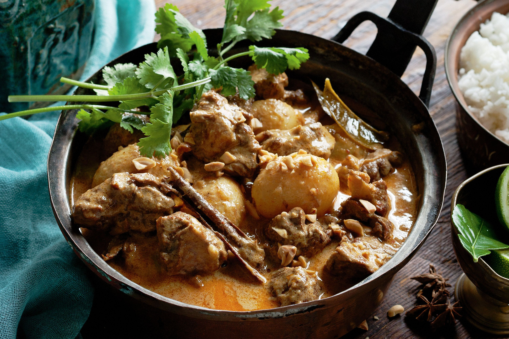

Massaman Curry

Description
Massaman is a rich curry sauce originating in Thailand. This recipe is for beef massaman, but this curry can also be made with chicken or tofu.
Best served with sticky rice and mountains of fresh coriander, massaman contains meat or tofu, potatoes, and rich, warm spices such as cinnamon. We'll be using store-bought paste, because we are not in fact experienced Thai grandmothers.
Ingredients
- 800g-1kg of shin beef
- 1 jar of massaman paste
- A couple of inches of fresh ginger, peeled and grated
- Four cloves of garlic
- 2 1/2 cups of beef stock
- Three medium-large potatoes
- 1 cup frozen peas
- Rice, fresh coriander, and chopped peanuts to serve
Method
- This is where I will describe the steps necessary for cooking this delicious meal.
- As we explored on the lasagne page, I am currently learning to use HTML, not perfecting my recipe writing skills.
- So here you go:
- Cook the curry and eat it with your loved ones.